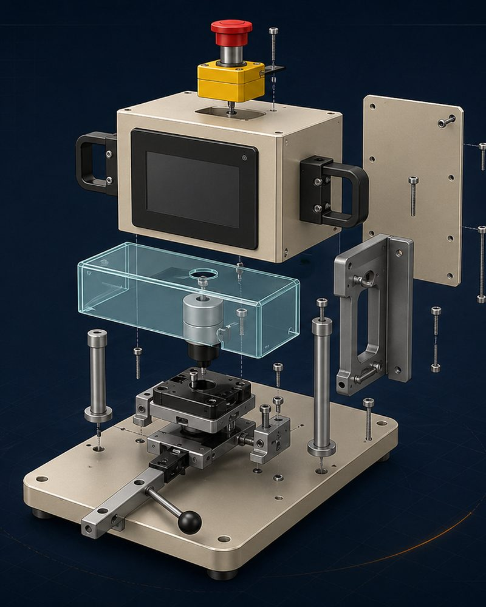

System-level judgment
Challenge the architecture before optimizing individual parts.
About EngineeringXYZ
EngineeringXYZ is a specialized, senior-led engineering consulting business focused on machine design, automation, fixtures, controls, production equipment, and project recovery.
The company exists for the work that does not fit neatly into a catalog or an already-overloaded internal schedule: a concept that needs a better architecture, an equipment problem that crosses mechanical and controls boundaries, or a stalled project that needs experienced ownership.
Clients work directly with senior technical leadership. When a project requires additional capability, EngineeringXYZ can coordinate with appropriate specialists, vendors, fabricators, contractors, and client resources around a clearly defined scope.

Engineering Approach
Good engineering is not measured by how many components, axes, or technologies a design contains. It is measured by how well the solution meets the manufacturing requirement and how practical it is to build, operate, maintain, and change.
EngineeringXYZ works across mechanical design, automation, controls, and manufacturing to make the important architecture decisions before detail accumulates around the wrong concept.
Challenge the architecture before optimizing individual parts.
Make tolerance, interface, access, and documentation decisions with fabrication and use in mind.
Apply controls and motion where they improve the process, not simply because they are available.
Document design intent so internal teams and vendors can carry the work forward.
Technical Leadership
Founder · Technical Lead
Marco leads EngineeringXYZ projects from early problem definition and architecture through detailed mechanical design, controls integration, documentation, and technical coordination. His experience spans custom automated manufacturing equipment, fixtures, inspection systems, machine architecture, SolidWorks-based mechanical design, PLC/HMI development, robotics, and project execution.
That cross-disciplinary background helps EngineeringXYZ identify where mechanical simplification can remove controls complexity, where controls can improve a practical mechanism, and where a project needs clearer interfaces rather than more activity.
Ph.D.
Mechanical Engineering
10+
Years of engineering and automation experience
4
U.S. patents granted and in process
10+
Peer-reviewed publications
How EngineeringXYZ Works
Clients work with the person making the important engineering decisions. Questions get technical answers, and risks are raised early.
Requirements, assumptions, interfaces, deliverables, and review points are established so the work has a clear path forward.
Outside specialists and client-selected vendors can be coordinated when the scope benefits from additional capability.
Half-finished designs, missing drawings, stalled vendors, and inherited projects can be assessed and organized into actionable work.
Concepts, CAD, drawings, controls documentation, specifications, and handoff packages are developed for the people who must use them.
Work can begin with a defined review, concept, problem, or backlog item and expand only when the next phase makes sense.
Experience Areas
EngineeringXYZ bridges the gaps that often slow equipment projects down: mechanical design versus controls, concepts versus drawings, engineering versus fabrication, and project intent versus production reality.
Detailed Scope Information
EngineeringXYZ provides mechanical, automation, and control-system engineering design services to qualifying manufacturing and industrial R&D companies for equipment and systems used in their own products, processes, and operations.
Responsibilities, acceptance criteria, and the roles of the client, EngineeringXYZ, vendors, fabricators, installers, and other specialists are defined in the project agreement.
A short description of the machine, process, backlog, or project problem is enough to begin a technical-fit discussion.
Discuss a Project